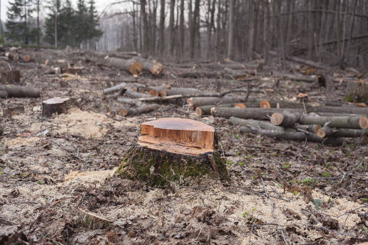

O que é desmatamento??
Desmatamento, também chamado de desflorestamento, consiste na retirada da cobertura vegetal parcial ou total de um determinado lugar. Enquanto alguns enxergam essa prática como uma ação necessária ao suprimento das necessidades do ser humano, outros apontam o desmatamento como um dos maiores problemas ambientais da atualidade. A retirada da cobertura vegetal está relacionada a diversas causas, como a urbanização, mineração e expansão do agronegócio, e seus impactos são inúmeros.
Causas do desmatamento
A exploração dos recursos naturais acontece desde os primórdios da humanidade. Contudo, na medida em que a sociedade desenvolveu-se, essa exploração intensificou-se, colocando em risco o equilíbrio do planeta e comprometendo o suprimento das gerações futuras.
A questão do desmatamento tomou grandes proporções a partir da Revolução Industrial. A introdução de novas tecnologias (que proporcionaram o aumento da produção industrial) e o consumo (que aumentou consideravelmente) fizeram com que diversas florestas temperadas e tropicais fossem devastadas, a fim de atender a essa nova demanda.
Os países industrializados apresentaram, durante esse período, maiores taxas de desmatamento. Com o passar dos anos, essas taxas começaram a cair nesses países e a aumentar nos países em desenvolvimento e subdesenvolvidos.
O desmatamento pode ser atribuído a diversas atividades, sendo essas, em sua maioria, antrópicas. A retirada da cobertura vegetal está relacionada, por exemplo, com a expansão do agronegócio; com o extrativismo animal, vegetal ou mineral; com a necessidade de explorar matéria-prima para atividades de todos os setores da economia; com a urbanização referente ao aumento das cidades; e também com atividades ilegais que envolvem queimadas propositais e até mesmo exploração de áreas de conservação para fins pessoais, como especulação fundiária.
A expansão do agronegócio é considerada uma das principais causas do aumento do desmatamento no mundo todo. Segundo a Organização das Nações Unidas para a Alimentação e a Agricultura (FAO), só na América Latina, a expansão da agricultura e da pecuária comercial é responsável por aproximadamente 70% do desmatamento.
Dados da FAO revelam que a prática agrícola, por meio das produções em escala industrial, e a pecuária, por meio do aumento dos pastos extensivos, fomentam o desmatamento em vários países do mundo.
Essa questão tem gerado diversas polêmicas, pois o agronegócio é o carro-chefe da economia de diversos países. Portanto, muitos justificam o desmatamento como necessário ao suprimento das necessidades humanas, como a produção de alimentos. Contudo, segundo o relatório O estado das florestas do mundo, de 2016, lançado pela FAO, aponta que não é necessário desmatar florestas para produzir alimentos. É necessário, ao invés de expandir as áreas agrícolas retirando as florestas, intensificar a atividade agrícola e as medidas de proteção social.
Consequências do desmatamento
Assim como as causas do desmatamento são muitas, suas consequências são proporcionais. Apesar de muitos acreditarem que se trata de um “mal necessário” para a manutenção do bem-estar social, especialmente com a questão da agropecuária e do extrativismo, que são atividades essenciais ao desenvolvimento de um país, a questão do desmatamento tomou proporções jamais vistas, colocando em risco todo o equilíbrio biológico do planeta Terra.
As principais consequências estão relacionadas ao meio ambiente e a tudo que lhe diz respeito. Ao desmatar, compromete-se toda a biodiversidade da área. Espécies da fauna perdem seu habitat e espécies da flora podem entrar para a lista de ameaças à extinção e assim causar um enorme desequilíbrio ambiental, prejudicando até mesmo as atividades primárias, das quais dependem muitas famílias, e também a economia, como a caça, a agricultura e a pecuária.
A retirada da cobertura vegetal também agrava a questão das mudanças climáticas. Além do aumento das emissões de gases poluentes à atmosfera que tem agravado o efeito estufa e o aquecimento global, o desmatamento também é considerado um dos fatores responsáveis pelas alterações no clima. Os anos estão cada vez mais quentes, e o aumento da temperatura da Terra tem causado inúmeros danos aos ecossistemas e também à saúde humana.
Outra questão diretamente ligada ao desmatamento está relacionada às alterações provocadas no solo, bem como nos recursos hídricos. Retirar a vegetação de uma determinada área favorece o processo de erosão do solo, pois é a cobertura vegetal que auxilia na infiltração da água da chuva. Portanto, sem ela, a água escorre sobre o solo, provocando deslizamentos e a erosão. A retirada da vegetação próxima a áreas de cursos d'água também provoca deslizamentos de terra, que se deposita nos rios, provocando então o assoreamento.
Todas essas questões convertem para o bem-estar e a qualidade de vida de todos os seres vivos no planeta. Todos nós dependemos das florestas, seja para a produção de oxigênio, seja para o fornecimento de matéria-prima para a produção de itens essenciais à vida. Se acabamos com esse recurso natural, obviamente somos nós que sofreremos diretamente as consequências. E isso já tem sido observado.
Diversos recursos naturais estão acabando, comprometendo as gerações futuras. O clima tem sofrido mudanças sentidas em todas as partes do mundo. E exatamente por essas questões, o desmatamento tem sido apontando como um dos maiores desafios da atualidade.
Desmatamento no Brasil
Como dito, o Brasil lidera o ranking mundial de desmatamento de florestas primárias, especialmente nos biomas Amazônia, Cerrado e Mata Atlântica. No ano de 2017, o país devastou 45 mil km², demonstrando que o país tornou a aumentar suas taxas de desmatamento que haviam caído.
Segundo o Monitoramento da Cobertura e Uso da Terra do Brasil, divulgado em 2018 pelo Instituto Brasileiro de Geografia e Estatística, o país perdeu cerca de 7,5% da sua cobertura vegetal. A área de vegetação do país era de 4.017.505 km2 em 2000. Esse número caiu para 3.719.801 km2 em 2016.
Esse levantamento também mostra que mais de 62.000 km2 da área do país sofreram alterações entre os anos de 2014 e 2016. A perda da vegetação acompanhou o ritmo acelerado da expansão das áreas agrícolas (especialmente em estados da região Norte, como Rondônia, Amazonas e Pará) e de pastagens próximas ao bioma Amazônia.
O monitoramento do desmatamento no país é feito oficialmente pelo Instituto Nacional de Pesquisas Espaciais (Inpe) e por algumas organizações independentes, como o Instituto do Homem e do Meio Ambiente na Amazônia (Imazon).
→ Desmatamento na Amazônia
O desmatamento da Amazônia tem provocado um grande pesar no mundo todo. A região de maior biodiversidade do planeta tem sofrido com o aumento do desmatamento e preocupado representantes de diversos países, assim como inúmeras organizações ambientais, considerando que a Amazônia é responsável pelo equilíbrio ambiental não só do Brasil mas do mundo todo.
Segundo estudos divulgados por pesquisadores da Universidade de Oklahoma, nos Estados Unidos, publicados na revista Nature Sustainability, a Amazônia brasileira perdeu 400 mil km² de suas florestas, área essa maior que o território da Alemanha, entre os anos de 2000 e 2017.
O Inpe divulgou, em 2019, novos dados a respeito da perca da cobertura vegetal no bioma. Esses dados apontam que o desmatamento aumentou em 278% no mês de julho comparado a julho do ano anterior. Foram devastados, só nesse período, cerca de 2.254,9 km² de florestas. Os dados são levantados pela Detecção do Desmatamento em Tempo Real (Deter), que monitora instantaneamente o desmatamento na região da Amazônia.
O aumento entre 2018 e 2019 foi de 49,5%, com relação ao período entre 2017 e 2018. A devastação está relacionada com o aumento das áreas destinadas à agropecuária; com a interferência na infraestrutura, como a de transporte; com a construção de hidrelétricas; com a mineração; e com os incêndios criminosos.
→ Desmatamento no Cerrado
O Cerrado, assim como a Amazônia, tem sofrido com a intensificação do desmatamento. De acordo com dados divulgados pelo Inpe em 2018, o bioma perdeu cerca de 6.657 km², 11% a menos que em 2016 e 33% a menos que o registrado em 2010.
O Cerrado é o segundo maior bioma do Brasil, atrás apenas da área ocupada pela Amazônia. Apesar da redução da taxa de desmatamento nos últimos anos, é preciso ressaltar que a perca da vegetação do bioma já chega a 51%. Esse desmatamento é associado ao avanço do agronegócio. Segundo o Instituto de Pesquisa Ambiental da Amazônia (Ipam), em 15 anos, o desmatamento do Cerrado foi superior ao praticado na Amazônia.
→ Desmatamento na Mata Atlântica
Sem dúvidas, o bioma Mata Atlântica é o que mais sofreu com a devastação no Brasil, e é no país o único bioma que possui legislação especifica, uma contradição. De acordo com o SOS Mata Atlântica, esse bioma, que cobria cerca de 15% do território brasileiro, possui apenas 1% da sua mata original. Seu desmatamento já chegou a 92%. Nele se encontra o maior número de espécies ameaçadas.
Dados apresentados pelo SOS Mata Atlântica apontam que o desmatamento do bioma caiu cerca de 9,8% entre os anos de 2017 e 2018, se comparado ao período entre 2016 e 2017. Em 2018 foram desmatados cerca de 113 km². Alguns estados alcançaram o desmatamento zero (desflorestamento abaixo de 100 hectares), como Ceará, Alagoas, Rio Grande do Norte, Rio de Janeiro, Espírito Santo, Paraíba, Pernambuco e São Paulo. Isso demonstra que os governos têm se esforçado para cumprir as leis que protegem as áreas compreendidas pelo bioma.
Contudo, de acordo com o Atlas dos Remanescentes Florestais da Mata Atlântica, alguns estados ainda apresentam elevadas taxas de desmatamento do bioma, como Minas Gerais, Paraná, Piauí, Bahia e Santa Catarina. A devastação nessas áreas está associada a atividades como a produção de carvão, a plantação de soja e a indústria de celulose.
